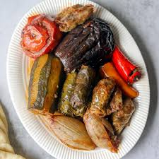

Home
Dolma

Discription
traditional syrian sandwitch
very common in Irar, Syria,
Germany and other countries
ingredients
Chicken breast
tomato
garlic souce
pickles
syrian bread
Steps
make it ready
make it good
make is Tasty
rock and roll